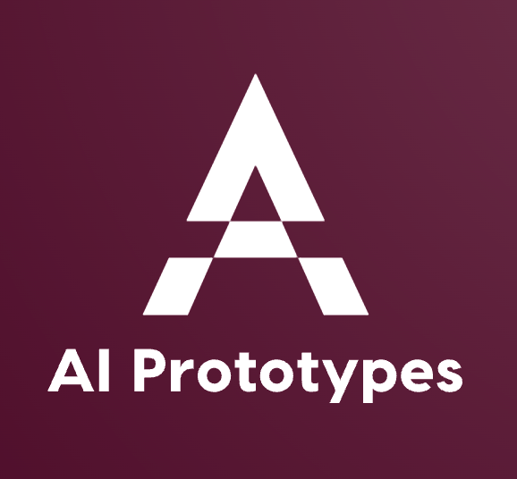

 Fast Prototypes for Artificial Intelligence Projects English Bilingual French by Xiaoou WANG Check out my research activities LinkedIn Case studies developed for DemoTal, a project of APIL-French tech du NLP supported by the French Ministry of Culture ¶ 1. Semi-automatic analysis of biomedical text 🇫🇷 2. Better understand spell checkers to make informed decisions 🇫🇷 3. Argue instead of blocking: moderating online comments while promoting debate 🇫🇷 4. Beyond the simple positive-negative dichotomy, discover the aspect-based sentiment analysis (ABSA) 🇫🇷 5. Extractive question answering from customer reviews 🇫🇷 6. Conducting POCs with limited data? From data quality to zero-shot learning 🇫🇷 NLP and Machine Learning-related ¶ 1. Comparer Spacy, StanfordNLP et TreeTagger sur un corpus oral et un corpus de presse 🇫🇷 2. Classification de prénoms en genre 🇫🇷 3. Text Classification : TF-IDF, Word Embedding et features expertes 🇫🇷 4. How to build a spell checker with deep learning 🇬🇧 5. Why using log scale 🇬🇧 6. How to build a LSTM-based Neural Machine Translation model with fairseq 🇬🇧 7. Everything is translation, build a chatbot using attention and self-attention in fairseq 🇬🇧 Transformers in NLP with PyTorch, TensorFlow and Hugging Face ¶ 1. 10 questions on Bert 🇬🇧 1. 10 questions sur Bert 🇫🇷 2. Classification de commentaires avec Camembert sans prise de tête : les fondamentaux 🇫🇷 Better Programmer ¶ 1. Mieux programmer en Python 🇫🇷 2. A serious guide to git 🇬🇧 3. Understand objected-oriented programming (OOP) by building a minimal Web Scraping framework 🇬🇧 4. Be a responsible programmer when doing Object-Oriented Programming 🇬🇧 Algorithms and data structures by examples in Python ¶ 1. Algorithm or many ways of solving a problem 🇬🇧 1. Algorithme ou plusieurs façons de résoudre un problème 🇫🇷 2. Data structures or many ways of organizing your stuff 🇬🇧 APPENDIX: Cheatsheet of algorithms and data structures 🇫🇷 🇬🇧 Web Related ¶ 1. Complete tutorial on scraping French news from Le Monde 🇬🇧 1. Scraper « le monde » et construire ton propre corpus 🇫🇷 2. On your way to scraping French forums 🇬🇧 3. Deploying Django app on Ubuntu at digitalocean + SSL certificate 🇬🇧 Computational Linguistics in R ¶ 1. La loi de Zipf illustrée avec gutenbergr en R 🇫🇷 2. Analyse des Correspondances Multiples : le cas de l’ergatif en warlipiri 🇫🇷 3. Analyse en composantes principales (PCA) : prépositions d’inclusion en français 🇫🇷 High performance computing ¶ 1. Parallelization in Python: a beginner’s guide (1, using map) 🇬🇧 Codebase ¶ 1. Bash 2. Tmux 3. Python 4. Pandas 5. Pytorch Mathematics in Machine Learning and NLP ¶ 1. Machine Learning : algorithmes et mathématiques 🇫🇷